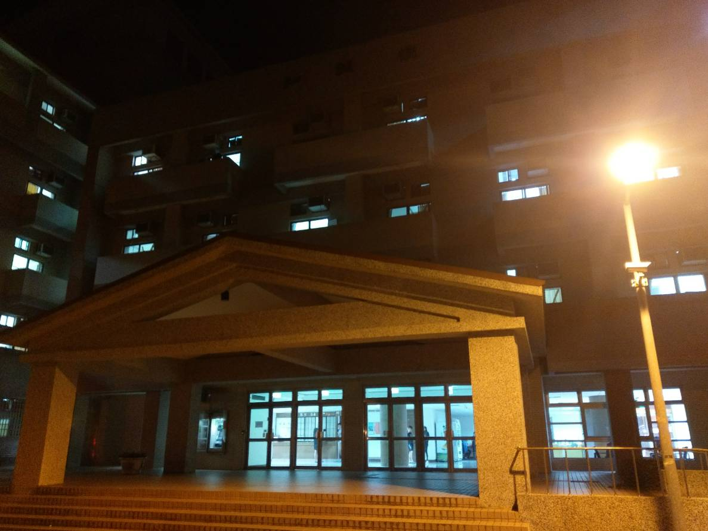
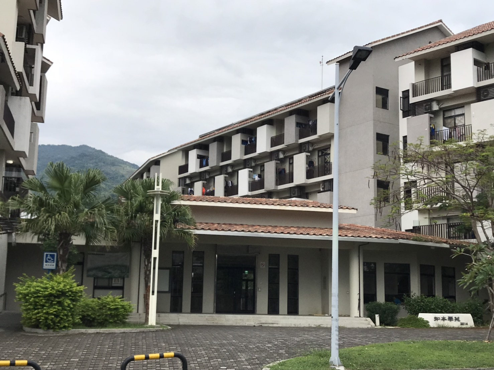
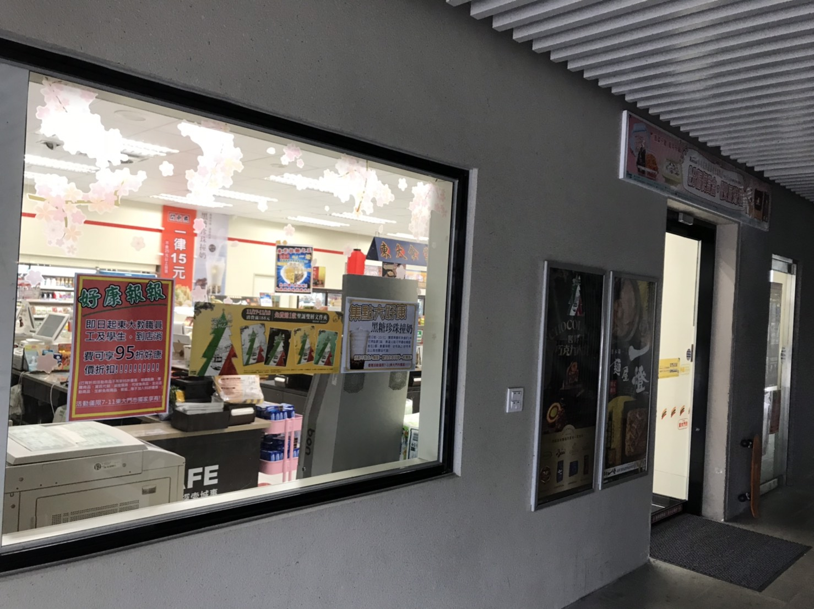
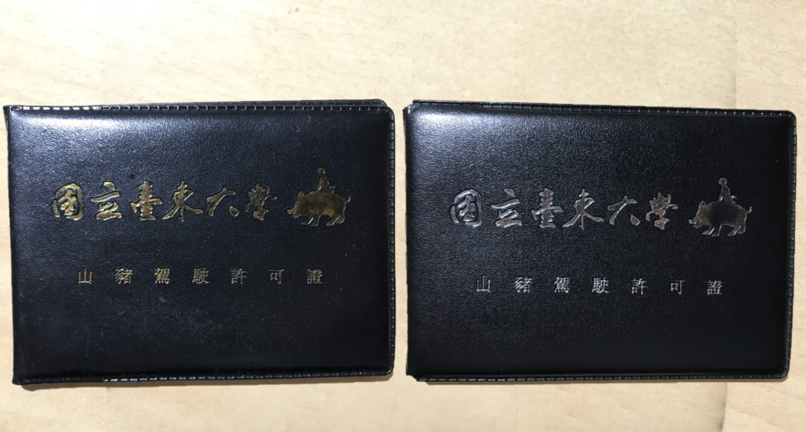

第一宿舍

主要提供給大一以上住宿生，須抽籤，電費採儲值電卡
門禁為晚上1點到早上5點
需自備檯燈，洗完澡要關熱水器(很耗電)
單人房每人學期住宿費22,500元
二人房每人學期住宿費15,750元
四人房每人學期住宿費10,125元
第二宿舍

主要提供給大一住宿，為健康宿舍
凌晨12點必須前關閉寢室大燈沒人注意
門禁為晚上12點到早上6點
二人房每人學期住宿費15,750元
四人房每人學期住宿費10,125元
7-11

普通的7-11，只是不是24小時營業
而且不賣菸酒很健康。
東大便利商店
東大自己的便利商店，內賣盥洗用具
，同時這也是傳說中的山豬騎乘考核所。

醫療資訊
東和外科診所
營業時間
星期日 07:30–22:00
星期一 07:30–22:00
星期二 07:30–22:00
星期三 07:30–22:00
星期四 07:30–22:00
星期五 07:30–22:00
星期六 07:30–22:00
地點
李旺駿耳鼻喉科診所
營業時間
星期日 休息
星期一 08:30–12:00, 14:30–17:30, 19:00–21:00
星期二 08:30–12:00, 14:30–17:30, 19:00–21:00
星期三 08:30–12:00, 19:00–21:00
星期四 08:30–12:00, 14:30–17:30, 19:00–21:00
星期五 08:30–12:00, 14:30–17:30, 19:00–21:00
星期六 08:30–12:00
地點
尤憲明內科小兒科診所
營業時間
星期日 休息
星期一 09:00–12:00, 14:30–17:30, 19:00–21:00
星期二 09:00–12:00, 14:30–17:30, 19:00–21:00
星期三 09:00–12:00, 14:30–17:30, 19:00–21:00
星期四 09:00–12:00, 14:30–17:30, 19:00–21:00
星期五 09:00–12:00, 14:30–17:30, 19:00–21:00
星期六 09:00–12:00
地點
陳東佑皮膚科診所
營業時間
星期日 休息
星期一 08:30–11:30, 15:30–18:30
星期二 08:30–11:30, 15:30–18:30
星期三 08:30–11:30
星期四 08:30–11:30, 15:30–18:30
星期五 08:30–11:30, 15:30–18:30
星期六 08:30–11:30
地點
太平洋牙醫診所
營業時間
星期日 休息
星期一 09:00–11:30, 14:00–17:00
星期二 09:00–11:30, 14:00–17:00
星期三 09:00–11:30, 14:00–17:00
星期四 09:00–11:30, 14:00–17:00
星期五 09:00–11:30, 14:00–17:00
星期六 休息
地點
吳明宏骨外科診所
營業時間
星期日 休息
星期一 08:30–21:00
星期二 08:30–21:00
星期三 08:30–17:30
星期四 08:30–21:00
星期五 08:30–21:00
星期六 08:30–12:00
地點